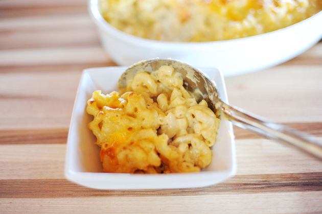

Mac and Cheese

A special ingredient gives this cheesy recipe a surprise twist.
Come, my child…come. I shall take you by the hand and take you where you need to go. I shall show you the food that is solely responsible for my bones and tissues multiplying and growing at a young age. It’s macaroni and cheese. And it’s the only food I consumed until I was about fourteen years old. Come…come, my child. I shall show you the way.
Ingredients
- 4 c. dried macaroni
- 1 whole egg
- 1/4 c. (1/2 stick or 4 tablespoons) salted butter
- 1/4 c. all-purpose flour
- 2 1/2 c. whole milk
- 2 tsp. (heaping) dry mustard, more if desired
- 1 lb. cheese (such as cheddar, jack and/or fontina), grated
- 1/2 tsp. salt, more to taste
- 1/2 tsp. seasoned salt, more to taste
- 1/2 tsp. ground black pepper
- Optional spices: cayenne pepper, paprika and/or thyme
Steps
- Cook the macaroni until very firm. The macaroni should be too firm to eat right out of the pot. Drain.
- In a small bowl, beat the egg.
- In a large pot, melt the butter and sprinkle in the flour. Whisk together over medium-low heat. Cook the mixture for 5 minutes, whisking constantly. Don’t let it burn. Pour in the milk, add the mustard, and whisk until smooth. Cook for 5 minutes until very thick. Reduce the heat to low.
- Take 1/4 cup of the sauce and slowly pour it into the beaten egg, whisking constantly to avoid cooking the egg. Whisk together till smooth.
- Pour the egg mixture into the sauce, whisking constantly. Stir until smooth. Add in the cheese and stir to melt. Add the salt, seasoned salt and pepper. Taste the sauce and add more salt and seasoned salt as needed! DO NOT UNDERSALT. Pour in the drained, cooked macaroni and stir to combine. Serve immediately (very creamy) or pour into a buttered baking dish, top with extra cheese, and bake at 350˚ for 20 to 25 minutes, or until bubbly and golden on top.